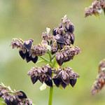

I’ve modified a traditional Jewish Recipe into a delicious split pea soup with extra nutrition from added vegetables and kasha (buckwheat). Buckwheat is a traditional whole grain food that is not related to wheat at all, indeed is actually a very small fruit called an achene and is related to rhubarb, making this a great option for gluten-free diets.

Each cup of cooked kasha supplies 148 mg potassium and only 7 mg sodium, which helps restore balance to our excessively sodium heavy diet and may help normalize high blood pressure. Each cup of cooked kasha, or buckwheat groats, provides 4.5 g dietary fiber, or 18 percent of the daily value. Dietary fiber can help lower levels of LDL, or “bad,” cholesterol in your blood and reduces your risk for constipation. Most Americans get less than half of the recommended amount of fiber, according to the 2010 Dietary Guidelines from the U.S. Department of Health and Human Services. Kasha provides just under 10 percent of the daily value for choline, niacin and iron. Kasha is also a low-glycemic index food, making this great for diabetics.
Feel free to add a little more or less of any ingredient you want as this recipe can be very flexible. If you want more flavors add a pinch of smoke flavoring, a ham hock, or your substitute your favorite meat stock. Get creative-this is your soup! Enjoy!
Ingredients:
1 1/2 cups dried split peas
1 1/2 cups dried Kasha (buckwheat grouts)
1 large organic carrot diced
1 medium organic zucchini diced
1 organic celery stick diced
1/2 medium onion diced
5 cloves of garlic chopped
6 cups organic vegetable stock (or water)
1 tbsp chopped fresh basil (1 tsp dry)
1 tbsp chopped fresh parsley (1 tsp dry)
1 tsp chopped fresh oregano (1/2 tsp dry)
1 tsp chopped fresh rosemary (1/2 tsp dry)
2 tsp chopped fresh thyme (1 tsp dry)
1/2 chopped fresh jalapeno (optional)
salt to taste
Start by rinsing the split peas. Add stock or water and bring to a boil on the stove-top. Reduce heat and simmer until peas are softened, about 25 minutes.
Toast the Kasha grouts in a pan in a toaster oven or on stove-top until fragrant and slightly browned (not blackened), about five minutes.
Add the toasted Kasha, the chopped vegetables and herbs to the cooked split peas. Bring to a boil again, then reduce heat to simmer another 25 minutes (or to preferred consistency).
Serve hot in a bowl. Crack an egg into the soup or sprinkle cheese or broken crackers on top if desired. Pair with toasted bread or a side salad. Then sit back and feel the intense nutrition flood into your happy body! Enjoy!